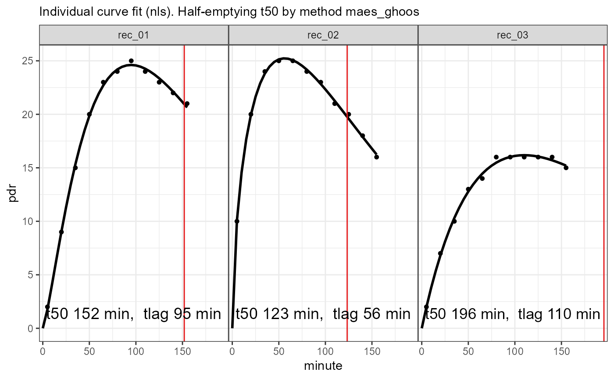

Fits individual exponential beta curves to 13C breath test time series
nls_fit(data, dose = 100, start = list(m = 50, k = 1/100, beta = 2))
| data | Data frame or tibble as created by |
|---|---|
| dose | Dose of acetate or octanoate. Currently, only one common dose for all records is supported. |
| start | Optional start values
|
A list of class ("breathtestnlsfit" "breathtestfit") with elements
Estimated parameters in a key-value format with
columns patient_id, group, parameter, stat, method and value.
Parameter stat always has value "estimate".
Confidence intervals might be added later, so do not take for granted
all parameters are estimates.
Input data; nls_fit does not decimate the data. If you have
large data sets where subsampling might be required to achieve faster convergence,
using nls_fit anyway is only relevant to show how NOT to do it.
Use nlme_fit or stan_fit instead.
Base methods coef, plot, print; methods from package
broom: tidy, augment.
d = simulate_breathtest_data(n_records = 3, noise = 0.2, seed = 4711) data = cleanup_data(d$data) fit = nls_fit(data) plot(fit) # calls plot.breathtestfitoptions(digits = 2) cf = coef(fit) library(dplyr) cf %>% filter(grepl("m|k|beta", parameter )) %>% select(-method, -group) %>% tidyr::spread(parameter, value) %>% inner_join(d$record, by = "patient_id") %>% select(patient_id, m_in = m.y, m_out = m.x, beta_in = beta.y, beta_out = beta.x, k_in = k.y, k_out = k.x)#> # A tibble: 3 x 7 #> patient_id m_in m_out beta_in beta_out k_in k_out #> <chr> <dbl> <dbl> <dbl> <dbl> <dbl> <dbl> #> 1 rec_01 58 58.0 2.33 2.34 0.00898 0.00895 #> 2 rec_02 54 53.6 1.61 1.61 0.00847 0.00852 #> 3 rec_03 52 51.6 1.98 1.99 0.00623 0.00626